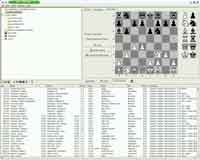
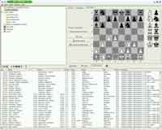

josé
is a graphical chess tool.
You can store chess games in a database (backed by
MySQL).
You can view games and edit variations and comments.
You can play against a "plugged-in" chess engine and use it for
analysis.
 


more screen shots...
Features:
- Graphical frontend to game database
- Read and write PGN (Portable Game Notations) files
- 2D and 3D view
- Edit games, insert comments, variations
- Bundled with Leela Chess Zero and Stockfish for play and analysis; plug in any UCI engine.
- Play Fischer Random Chess / Chess 960, or Shuffle Chess
- Opening Books and access to Lichess Opening Explorer
- ECO opening classification
- Use Chessnut Air / Air+ / Pro electronic boards
- Position Search
- Create HTML and PDF files.
--- Peter Schäfer